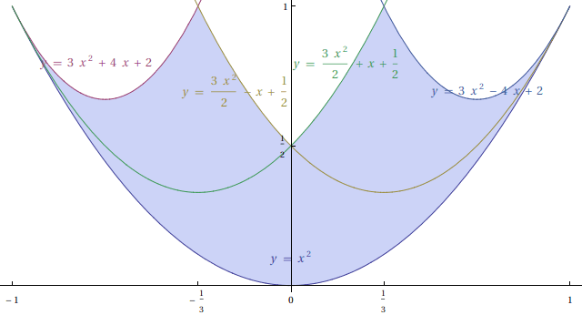

東京大学 2007年 理科 第3問
問題
座標平面上の2点P,Qが、曲線 上を自由に動くとき、線分PQを1:2に内分する点Rが動く範囲をDとする。ただし、P=QのときはR=Pとする。
上を自由に動くとき、線分PQを1:2に内分する点Rが動く範囲をDとする。ただし、P=QのときはR=Pとする。
(1) aを-1≤a≤1をみたす実数とするとき、点(a,b)がDに属するためのbの条件をaを用いて表せ。
(2) Dを図示せよ。
解答
(1)
点Pの座標を 、点Qの座標を
、点Qの座標を として、点(a,b)が領域Dに入る条件を求める。
として、点(a,b)が領域Dに入る条件を求める。


これをbについて整理して
 のとき
のとき 
 のとき
のとき 
 のとき
のとき 
 のとき
のとき 
(2)
RegionPlotで領域Dを図示する。(塗りつぶし部分)

